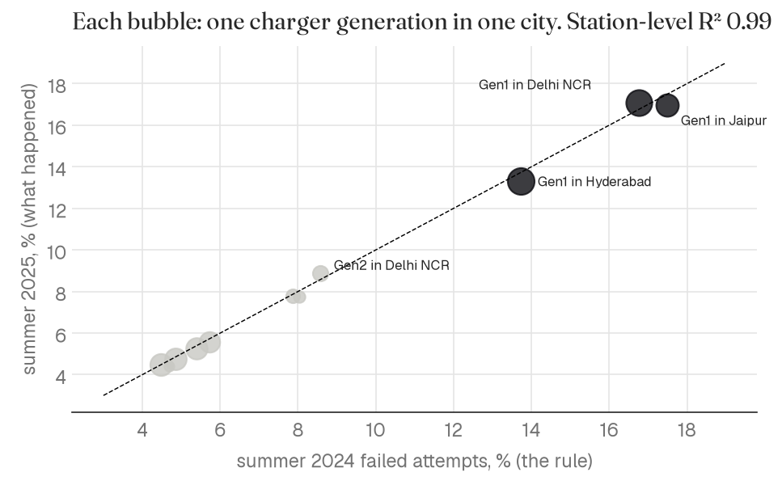

They will fail again next April. Here is why, and what the budget should fix instead of opening more stations.
An electric two- and three-wheeler swap network in six Indian cities. Leadership had four budget ideas on the table:
A rule built from summer 2024 alone predicted every station's summer 2025 failure rate.

At 45°C inside the cabinet, minutes to charge one pack:
36 old Gen1 cabinets in Jaipur, Delhi NCR and Hyderabad handled 27.4% of summer attempts.
Same station, same temperature. Share of 2W attempts that failed for "no charged pack", at 45°C or more:
The heat is the cause. The empty shelf is a symptom.
The riders a growing network most needs to keep are the ones the old cabinets turn away.
27,193 fewer failed attempts a summer if they ran like Gen3.
Full analysis: link in the comments